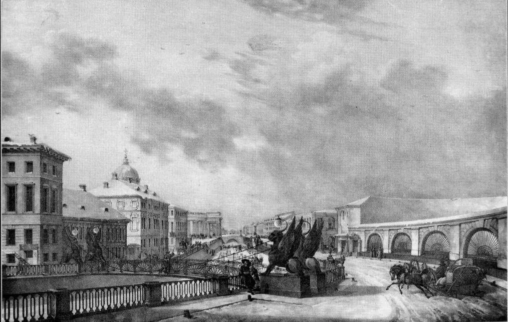
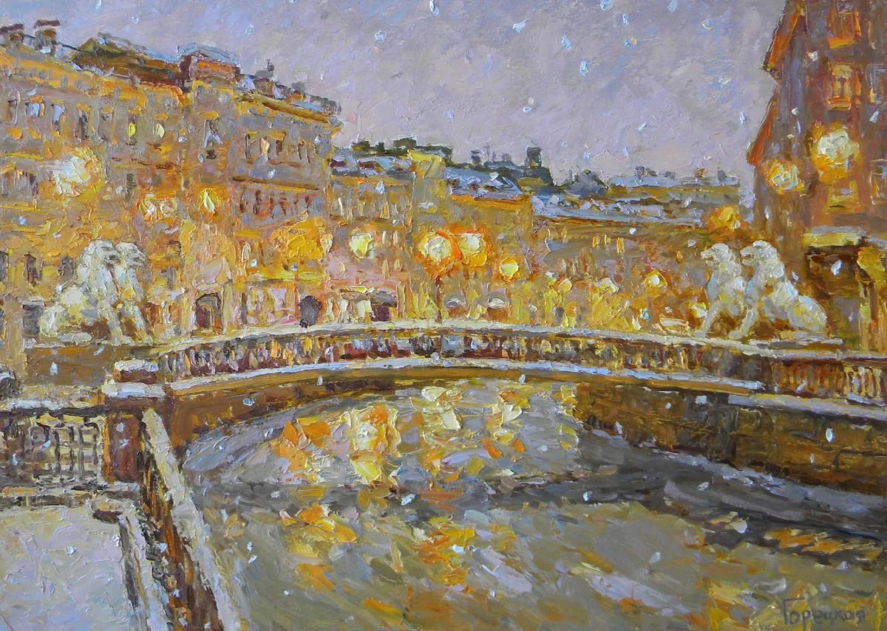
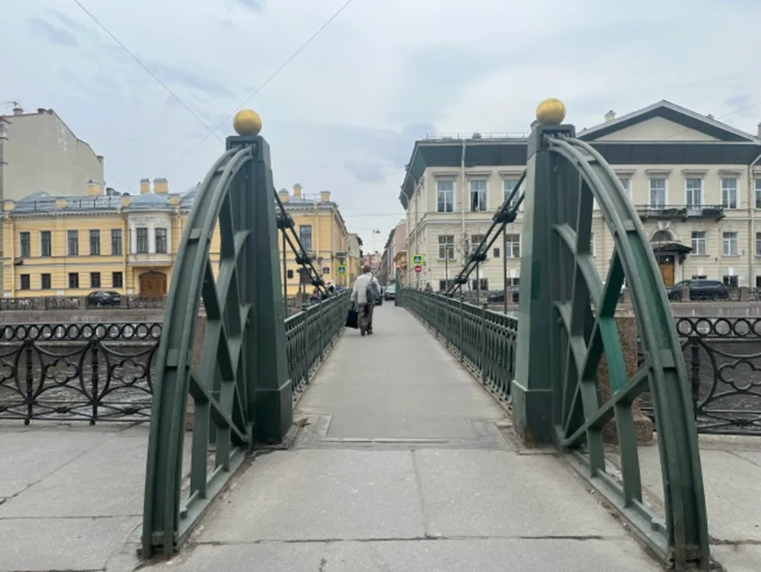
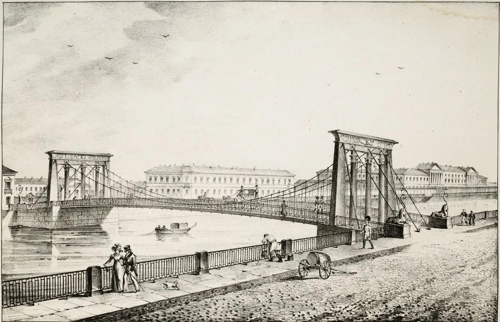
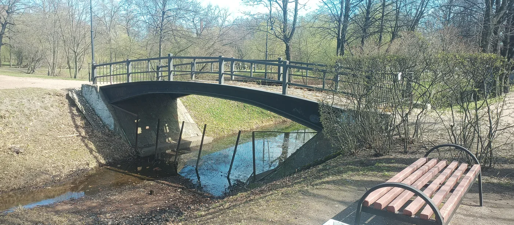

сохранился1825–1826
Банковский мост
Камерный пешеходный мост с четырьмя крылатыми грифонами — один из самых узнаваемых видов у канала Грибоедова.
- Где
- канал Грибоедова
- Открыт
- 24 июля 1826
Каталог
Карточки дают быстрый обзор: период, место, состояние и главный смысл объекта. Подробности, галереи и таймлайны — на страницах мостов.

Камерный пешеходный мост с четырьмя крылатыми грифонами — один из самых узнаваемых видов у канала Грибоедова.

Пешеходный цепной мост в створе Львиного переулка и Малой Подьяческой улицы, знаменитый белыми чугунными львами.

Первый в России пешеходный цепной мост — инженерный эксперимент у Главного почтамта на Мойке.

Драматичный мост через Фонтанку: египтизирующий декор, сфинксы и обрушение исторической цепной конструкции в 1905 году.

Место, где ранняя цепная конструкция уступила место монументальному арочному мосту начала XX века.

Первый в России и один из первых в континентальной Европе цепных пешеходных мостов постоянного типа.
Для первой прогулки удобнее смотреть сохранившиеся пешеходные мосты в центре — Почтамтский, Банковский и Львиный, а затем перейти к объектам с более сложной судьбой: Египетскому, Пантелеймоновскому и Екатерингофскому.
Открыть карту без наложенных меток